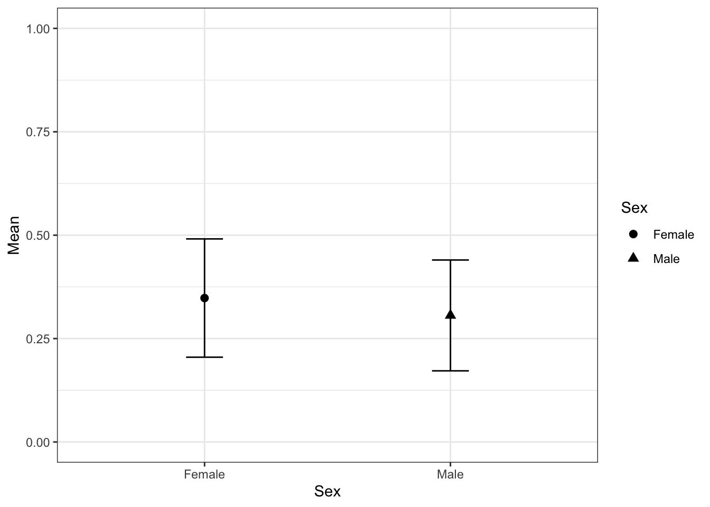

As always it’s only fair links go first
Some commonly used statistics calculations for use in RStudio.
Load data
We’ll load some data on Tasmanian devils and presence of DFTD (cancer) and Trypanosoma presence. The data is coded so that 0 is negative and 1 is positive.
library(readr)
# Load data
tasdevil <- read_csv("data/tasdevil-parasite.csv")Sructure of data set
str(tasdevil)## tibble [95 × 17] (S3: spec_tbl_df/tbl_df/tbl/data.frame)
## $ Microchip : num [1:95] 9.82e+14 9.82e+14 9.82e+14 9.82e+14 9.82e+14 ...
## $ Site_name : chr [1:95] "Takone" "Takone" "Takone" "Takone" ...
## $ Site_code : chr [1:95] "TKN" "TKN" "TKN" "TKN" ...
## $ Sex : chr [1:95] "Male" "Female" "Male" "Male" ...
## $ YOB : num [1:95] 2017 2016 2017 2016 2013 ...
## $ BloodNumber : chr [1:95] "TKN-215" "TKN-178" "TKN-213" "TKN-192" ...
## $ TrappingDate: chr [1:95] "May-18" "May-18" "May-18" "May-18" ...
## $ DFTDScore : num [1:95] 1 5 1 5 1 1 1 5 1 1 ...
## $ DFTDStatus : num [1:95] 0 1 0 1 0 0 0 1 0 0 ...
## $ Blood_lid_id: chr [1:95] "A1" "A10" "A2" "A3" ...
## $ TrypStatus : num [1:95] 0 0 1 0 0 1 0 0 0 0 ...
## $ TrypCope : num [1:95] 0 0 1 0 0 1 0 0 0 0 ...
## $ TrypNov : num [1:95] 0 0 0 0 0 0 0 0 0 0 ...
## $ TrypSpp : chr [1:95] "Neg" "Neg" "T.cope" "Neg" ...
## $ TickStatus : num [1:95] 1 1 1 1 1 1 1 0 1 1 ...
## $ TickNos : num [1:95] 1 1 1 1 1 1 1 0 1 1 ...
## $ TickSpp. : chr [1:95] "ITaF" "ITaF" "ITaF" "ITaF" ...
## - attr(*, "spec")=
## .. cols(
## .. Microchip = col_double(),
## .. Site_name = col_character(),
## .. Site_code = col_character(),
## .. Sex = col_character(),
## .. YOB = col_double(),
## .. BloodNumber = col_character(),
## .. TrappingDate = col_character(),
## .. DFTDScore = col_double(),
## .. DFTDStatus = col_double(),
## .. Blood_lid_id = col_character(),
## .. TrypStatus = col_double(),
## .. TrypCope = col_double(),
## .. TrypNov = col_double(),
## .. TrypSpp = col_character(),
## .. TickStatus = col_double(),
## .. TickNos = col_double(),
## .. TickSpp. = col_character()
## .. )How many had DFTD
sum(tasdevil$DFTDStatus)## [1] 21Load libraries
# Install first if you need
#
# install.packages("DescTools")
# install.packages("PropCIs")
# install.packages("binom")
# install.package("rcompanion")
# install.package("tidyverse")library(DescTools)
library(PropCIs)
library(binom)
library(rcompanion)
library(tidyverse)## ── Attaching packages ─────────────────── tidyverse 1.3.0 ──## ✓ ggplot2 3.3.0 ✓ dplyr 0.8.5
## ✓ tibble 3.0.1 ✓ stringr 1.4.0
## ✓ tidyr 1.0.2 ✓ forcats 0.5.0
## ✓ purrr 0.3.4## ── Conflicts ────────────────────── tidyverse_conflicts() ──
## x dplyr::filter() masks stats::filter()
## x dplyr::lag() masks stats::lag()Calculate different in Trypanosoma prevalence between males and females with 95% CIs
groupwiseMean(TrypStatus ~ Sex,
data = tasdevil,
conf = 0.95,
digits = 3)## Sex n Mean Conf.level Trad.lower Trad.upper
## 1 Female 46 0.348 0.95 0.205 0.491
## 2 Male 49 0.306 0.95 0.172 0.440We could plot the values above using this…
#save values to a data.frame
CI <- groupwiseMean(TrypStatus ~ Sex,
data = tasdevil,
conf = 0.95,
digits = 3)
#plot
qplot(x= Sex,
y = Mean,
data = CI,
shape= Sex) +
geom_point(size=2.5) +
geom_errorbar(aes(
ymin = Trad.lower,
ymax = Trad.upper,
width = 0.15)) + theme_bw() + ylim(0,1)
Calculate different in Trypanosoma prevalence between males and females and 4 different sites with 95% CIs
groupwiseMean(TrypStatus ~ Sex + Site_code,
data = tasdevil,
conf = 0.95,
digits = 3)## Sex Site_code n Mean Conf.level Trad.lower Trad.upper
## 1 Female BRI 16 0.438 0.95 0.1640 0.711
## 2 Female FNP 12 0.000 0.95 0.0000 0.000
## 3 Female TKN 10 0.200 0.95 -0.1020 0.502
## 4 Female WPP 8 0.875 0.95 0.5790 1.170
## 5 Male BRI 15 0.267 0.95 0.0132 0.520
## 6 Male FNP 15 0.200 0.95 -0.0293 0.429
## 7 Male TKN 13 0.308 0.95 0.0174 0.598
## 8 Male WPP 6 0.667 0.95 0.1250 1.210If you need here are some simple bits of code where you have basic numbers such as…7 positive out of sample size of 21.
binom.test(7, 21,
0.5,
alternative="two.sided",
conf.level=0.95)##
## Exact binomial test
##
## data: 7 and 21
## number of successes = 7, number of trials = 21, p-value = 0.1892
## alternative hypothesis: true probability of success is not equal to 0.5
## 95 percent confidence interval:
## 0.1458769 0.5696755
## sample estimates:
## probability of success
## 0.3333333Now we’ll calculate the 95% CIs using the Jeffreys method.
BinomCI(7, 21,
conf.level=0.95,
method="jeffreys")## est lwr.ci upr.ci
## [1,] 0.3333333 0.1632227 0.5459686Using epitools - manual here
Reminder: If you need more information on the tests use the help command in the console (e.g. ?riskratio, ?oddsratio).
Library
library(epitools)
# if you don't have this package, first install using `install.packages("epitools")`Create a simple dataframe. In this case we’ll test effect of gender on parasite presence with a simple positive/negative summary. Of course if you have a your raw data in a spreadsheet you could make your own by summarising the releavnt information into a dataframe. (Need help tidying and summarising your data…check out this tutorial to check you hooked on the dplyr and tidyr packages
factor1 <- c("Female", "Male")
factor2 <- c("Positive", "Negative")dat <- matrix(c(16, 30, 15, 34), nrow = 2, ncol = 2, byrow = TRUE)
dimnames(dat) <- list("Sex" = factor1, "Parasite present" = factor2)Your dataframe should look like this
dat## Parasite present
## Sex Positive Negative
## Female 16 30
## Male 15 34Now lets calculate our odds ratio
oddsratio(dat)## $data
## Parasite present
## Sex Positive Negative Total
## Female 16 30 46
## Male 15 34 49
## Total 31 64 95
##
## $measure
## odds ratio with 95% C.I.
## Sex estimate lower upper
## Female 1.000000 NA NA
## Male 1.205696 0.506045 2.888357
##
## $p.value
## two-sided
## Sex midp.exact fisher.exact chi.square
## Female NA NA NA
## Male 0.6721372 0.8269438 0.6648308
##
## $correction
## [1] FALSE
##
## attr(,"method")
## [1] "median-unbiased estimate & mid-p exact CI"and relative risk
riskratio(dat)## $data
## Parasite present
## Sex Positive Negative Total
## Female 16 30 46
## Male 15 34 49
## Total 31 64 95
##
## $measure
## risk ratio with 95% C.I.
## Sex estimate lower upper
## Female 1.000000 NA NA
## Male 1.063946 0.8030739 1.409559
##
## $p.value
## two-sided
## Sex midp.exact fisher.exact chi.square
## Female NA NA NA
## Male 0.6721372 0.8269438 0.6648308
##
## $correction
## [1] FALSE
##
## attr(,"method")
## [1] "Unconditional MLE & normal approximation (Wald) CI"Manual here and webpage
Copyright © Siobhon L. Egan.